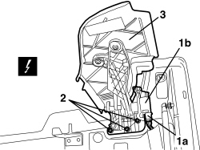
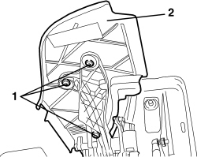
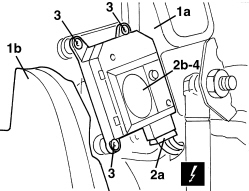
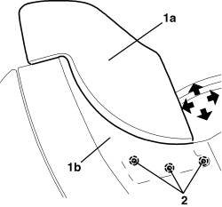
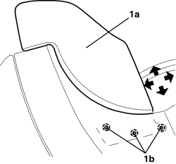

7210E47 HOOD HOUSING COMPARTMENT SIDE COVER - R.R.
- Path
- Procedures > 72 PANELS AND FRAMES > 7210 REMOVING-REFITTING > 7210E EXTERNAL PARTS > 7210E47 HOOD HOUSING COMPARTMENT SIDE COVER - R.R.
- Kind
- repair procedure (removal / refitting; the operation number is the code)
- Applies to
- engines: 2.2 JTS, 3.2 JTS; all production periods; only with equipment: Spider
- Interactive page
- https://sloeber94.github.io/elrnDB-aBrrSpdr/en/#/946004208
Applies to: engines: 2.2 JTS, 3.2 JTS; all production periods; only with equipment: Spider
 Removing
Removing
 Refitting
Refitting- Prepare the hood for the procedure.
Op. 0010T79 HOOD HYDRAULIC SYSTEM - DISCHARGE AND RESTORE PRESSURE
COVER ASSEMBLY
- Raise the hood compartment cover fully using the electric control.
1. Disconnect electrical connection (1a) for side cover rotation motor (flap) (1b).
Description | Connector | |
|---|---|---|
1a | LEFT HOOD FLAP CONTROL MOTOR | |
1a | RIGHT HOOD FLAP CONTROL MOTOR |
2. Unscrew the nuts.
3. Remove the side cover assembly (flap).

Applies to: engines: 2.2 JTS, 3.2 JTS; all production periods; only with equipment: Spider
SINGLE COVER
- Raise the hood compartment cover fully using the electric control.
1. Unscrew the nuts.
2. Remove the side cover (flap).

Applies to: engines: 2.2 JTS, 3.2 JTS; all production periods; only with equipment: Spider
MOTOR
1. Using the electric control, place hood compartment cover (1a) in the fully raised position and side cover (flap) (1b) in the lowered position (as illustrated).
2. Disconnect electrical connection (2a) for side cover rotation motor (flap) (2b).
Description | Connector | |
|---|---|---|
2a | LEFT HOOD FLAP CONTROL MOTOR | |
2a | RIGHT HOOD FLAP CONTROL MOTOR |
3. Undo the motor retaining bolts.
4. Remove the motor by releasing it from the socket.

Applies to: engines: 2.2 JTS, 3.2 JTS; all production periods; only with equipment: Spider
Refitting
RemovingCOVER ASSEMBLY
- Check that the side cover (flap) is not damaged.
1. Position side cover assembly (flap) (1a) and align it with the profile of hood compartment cover (1b). The arrows indicate the possible movements.
2. Screw in the nuts without tightening them (for subsequent alignment with the bodywork).

Applies to: engines: 2.2 JTS, 3.2 JTS; all production periods; only with equipment: Spider
- Connect the electrical connection for the cover rotation motor.
- Close the hood compartment cover completely using the electric control, then check the alignment of the cover refitted with the bodywork; if necessary, open the hood compartment cover again and adjust the side cover (flap) more until it is in the correct position.
SINGLE COVER
- Check that the side cover (flap) is not damaged.
- Position the side cover (flap).
- Screw in the nuts.
1. - Close the hood compartment cover completely using the electric control, then check the alignment of the refitted cover with the bodywork; if necessary, open the hood compartment cover again and adjust side cover (flap) (1a) until it is in the correct position after having loosened nuts (1b). The arrows indicate the possible movements.

Applies to: engines: 2.2 JTS, 3.2 JTS; all production periods; only with equipment: Spider
MOTOR
- Check that the motor is not damaged.
- Position the motor by attaching the socket.
- Screw in the bolts.
- Secure the electrical connection for the motor.
- Operate the hood using the electric control and check that the side cover (flap) is working properly.
Topics linked from this page (3)
- 0010T79 HOOD HYDRAULIC SYSTEM - DISCHARGE AND RESTORE PRESSURE
- N190 LEFT HOOD FLAP CONTROL MOTOR
- N191 RIGHT HOOD FLAP CONTROL MOTOR